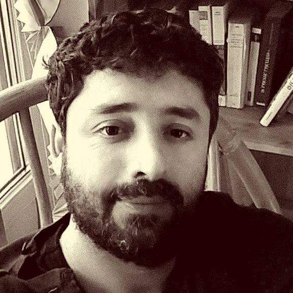

Isaac Hernandez Aguirre
Docteur en Philosophie des Sciences, Master en Philosophie des Sciences, Ingénieur Agricole et Développeur web full stack.
Parvenu au terme d’une expérience enrichissante dans l’enseignement et la recherche qui m’a permis de structurer ma pensée de manière rigoureuse, j’ai décidé de redéfinir totalement mes objectifs professionnels en m’orientant vers ma passion pour l’informatique. Je suis à la recherche d’un contrat en alternance en apprentissage pour préparer ma reconversion.
